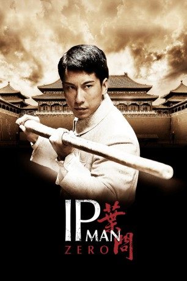

#812 Ip Man Zero
Alternativ: The Legend Is Born: Ip Man (Englischer Titel)
 
 IMDB-Wertung: 7.1 / 10
IMDB-Wertung: 7.1 / 10  Metascore: 0
Metascore: 0 
Foshan im Jahre 1905. Der junge Ip Man besucht die Schule des Martial Arts-Meisters Chan Wah-Shun, der ihn mit den Grundzügen der WingTsun-Technik vertraut macht. Nach dessen plötzlichem Tod übernimmt sein Kollege Ng Chung-So die Schule und hilft Ip Man, sich weiter zu verbessern. Jahre später zieht der junge Ip Man nach Hongkong und lernt den alten Leung-Bik kennen, der ihn weitere Aspekte des WingTsun lehrt. Schließlich kommt es für Ip Man zu einer Auseinandersetzung mit seinem Adoptivbruder Ip Tin-Chi, der ein Geheimnis verbirgt, das die ganze Nation bedrohen könnte...
Jahr: 2010
Dauer: 100 Minuten
FSK: 12
Land: Hong-Kong Studio: Splendid FilmTonspuren:
Untertitel: Deutsch,
Auflösung: 1080p (1920x816) Größe: 10342 MB
Genre: Action, Drama, Sport, Geschichte, Biographie
Regisseur: Herman Yau
Drehbuch: Erica Lee, Sean Whitley
Soundtrack: Jan Hung Mak
Darsteller:
 Siu-Wong Fan als Yip Tin Chi
Siu-Wong Fan als Yip Tin Chi Sammo Kam-Bo Hung als Chan Wah Shun
Sammo Kam-Bo Hung als Chan Wah Shun- Bernice Liu als Kitano Yumi
 Jiao Xu als Young Li Mei Wai
Jiao Xu als Young Li Mei Wai- Kenya Sawada als Kitano Yukio
 Yu-Hang To als Yip man
Yu-Hang To als Yip man- Yi Huang als Cheung Wing Shing
 Biao Yuen als Ng Chung So
Biao Yuen als Ng Chung So- Rose Chan als Li Mei Wai
- Ip Chun als Leung Bik
 Suet Lam als Cheung Ho Tin
Suet Lam als Cheung Ho Tin- Heman Leung als Li Man Ho
- Jun Hui Wen als Young Yip Man
- Shen Al Ji als Young Yip Tin Chi
- Sire Ma als Cheung Wing Wah
- Kwok-Lun Lee als Sheriff
- Zhi-Hui Chen als Yip's Father
- Chi Zhang als Sui San
- Xue Liang Zhu als Yao Choi
- Xiao Lung Ding als Rogue
- Lena Yang als Acrobatics Girl
- Fang Ting Ting als Flirtatious Lady
- Shan Peng Dang als Japanese Killer
- Gus Lim als Japanese Killer
- Andy Taylor als Foreign Student
- Wai Geung als (uncredited
Datei: X:\HD-Eastern-Collections\Ip Man\Ip Man Zero (2010, FSK12, 1920x816).mkv seit 27.03.2015
Festplatte: HD Eastern+Western
 Es gibt insgesamt 11 Filme in der Gruppe 'HD-Eastern-Collections\Ip Man'
Es gibt insgesamt 11 Filme in der Gruppe 'HD-Eastern-Collections\Ip Man'